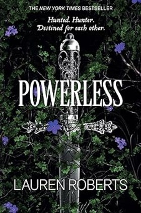
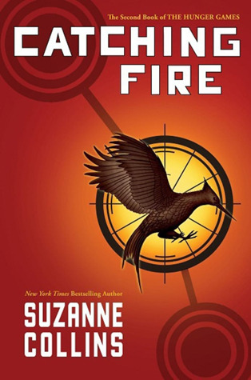

|
Reckless (The Powerless Trilogy) -- Lauren RobertsRating: 3/5 | ★★★☆☆ Summary:"Reckless (The Powerless Trilogy)" by Lauren Roberts follows protagonist Elena as she discovers newfound abilities in a world where superpowers are outlawed. Facing both intrigue and danger, Elena navigates a thrilling journey of self-discovery and resistance against a tyrannical regime. Review:"Reckless" delivers a compelling narrative with intricate world-building and well-developed characters. Roberts masterfully blends action and suspense, keeping readers engaged from start to finish. With its strong themes of empowerment and defiance, this book offers a gripping read for fans of dystopian fiction and superhero tales alike. |
|  |
Powerless (The Powerless Trilogy) -- Lauren RobertsRating: 3/5 | ★★★☆☆ Summary:"Powerless," part of "The Powerless Trilogy" by Lauren Roberts, delves into a dystopian world where a select few possess extraordinary abilities while others struggle with their lack thereof. As protagonist struggles unfold, themes of identity, power, and societal divisions take center stage, setting the stage for an epic conflict. Review:"Powerless" captivates with its vivid world-building and nuanced characters. Lauren Roberts skillfully navigates complex themes of inequality and personal resilience, crafting a narrative that balances action with introspection. Readers will find themselves drawn into the protagonist's journey, eager to uncover the secrets of a world where power comes at a profound cost. |
Mindless -- R WK ClarkRating: 5/5 | ★★★★★ Summary:"Mindless" by R WK Clark explores a dystopian future where technology controls humanity's thoughts and actions. As society grapples with the consequences of a mind-controlling device, a group of rebels fights for freedom against a totalitarian regime. Review:"Mindless" captivates with its chilling depiction of a world dominated by mind-altering technology. Clark's narrative skillfully blends suspense and social commentary, offering a thought-provoking exploration of individuality and resistance. With well-crafted characters and a gripping plot, "Mindless" keeps readers engaged until its thrilling conclusion. |

|
Harry Potter and the Sorcerer's Stone -- J.K. RowlingRating: 2/5 | ★★☆☆☆ Summary:"Harry Potter and the Sorcerer's Stone" by J.K. Rowling introduces readers to a young boy, Harry Potter, who discovers he is a wizard and embarks on his magical journey at Hogwarts School of Witchcraft and Wizardry. Alongside new friends Hermione Granger and Ron Weasley, Harry uncovers mysteries surrounding his parents' deaths and encounters the dark wizard Voldemort. Review:J.K. Rowling's "Harry Potter and the Sorcerer's Stone" captivates readers with its enchanting blend of magic, adventure, and friendship. The narrative unfolds seamlessly, immersing readers into a world brimming with spells, mythical creatures, and compelling characters. Rowling's storytelling prowess shines through, making it a timeless classic beloved by readers of all ages worldwide. |
Mockingjay -- Suzanne CollinsRating: 2/5 | ★★★★☆ Summary: The final installment of The Hunger Games trilogy follows Katniss Everdeen as she becomes the symbol of rebellion against the oppressive Capitol. Amidst the war, Katniss faces personal loss and moral dilemmas. Review: Mockingjay is a dark, intense conclusion to the series, but it often feels rushed and disjointed. The character arcs and plot developments sometimes lack coherence, leaving readers with an unsatisfying end to an otherwise strong trilogy. |
|  |
Catching Fire -- Suzanne CollinsRating: 4/5 | ★★★★☆ Summary: Katniss Everdeen and Peeta Mellark return home as victors of the 74th Hunger Games, only to be thrust back into danger with the Quarter Quell, a special edition of the Games that threatens their lives once more. Review: Catching Fire builds on the momentum of the first book with higher stakes and deeper character development. The plot twists and new characters add excitement and complexity, making it a worthy sequel that keeps readers on the edge of their seats. |
The Hunger Games -- Suzanne CollinsRating: 5/5 | ★★★★★ Summary: In a dystopian future, Katniss Everdeen volunteers to take her sister's place in the annual Hunger Games, a televised fight to the death. She must navigate deadly challenges and political intrigue to survive. Review: The Hunger Games is a gripping, fast-paced novel with a strong, relatable protagonist. Collins creates a vivid, unsettling world that raises thought-provoking questions about society and human nature. It's a compelling start to a groundbreaking trilogy. |
The Help (a novel) -- Kathryn StockettRating: 3/5 | ★★★☆☆ Summary: Set in the 1960s South, The Help follows three women - Aibileen, Minny, and Skeeter - as they navigate racial tensions and societal expectations to tell the stories of black maids working in white households. Review: The Help offers a heartfelt, though sometimes simplistic, look at race relations and civil rights. The characters are engaging, and the story is emotionally powerful, though it occasionally falls into stereotypes and lacks depth in its exploration of complex issues. |
 |
Life of Pi -- Yann MartelRating: 4/5 | ★★★★☆ Summary: After a shipwreck, Pi Patel, a young Indian boy, finds himself stranded on a lifeboat with a Bengal tiger named Richard Parker. Together, they embark on an extraordinary journey of survival and self-discovery. Review: Life of Pi is a beautifully written, thought-provoking novel that blends adventure with philosophical musings. Martel's storytelling is captivating, though some readers may find the pacing slow at times. It's a unique and memorable tale. |
 |
Maame (a novel) -- Jessica GeorgeRating: 5/5 | ★★★★★ Summary: Maddie Wright, known as Maame, navigates the complexities of modern life, family expectations, and her personal ambitions in London. Through her journey, she confronts her identity and the challenges of finding her own path. Review: George's debut novel is a poignant, relatable exploration of identity and self-discovery. The characters are vividly drawn, and the narrative is both humorous and deeply emotional. Maame's story is inspiring and resonant, making it a must-read. |
Throne of Glass -- Sarah J. MaasRating: 4/5 | ★★★★☆ Summary: Assassin Celaena Sardothien is offered a chance at freedom if she can win a deadly competition to become the king's champion. As she competes, she uncovers dark secrets about the kingdom and herself. Review: Throne of Glass is an exciting, action-packed start to a beloved fantasy series. Maas's world-building is impressive, and Celaena is a compelling, complex protagonist. The plot is engaging, though it sometimes leans on familiar fantasy tropes. |
 |
Clockwork Angel -- Cassandra ClareRating: 3/5 | ★★★☆☆ Summary: Tessa Gray arrives in London to find her missing brother, only to be plunged into a world of supernatural beings. With the help of the Shadowhunters, she uncovers her own powers and the dark forces at play. Review: Clockwork Angel is an intriguing blend of fantasy and steampunk. Clare's characters are engaging, and the plot is filled with twists and turns. However, it can feel derivative at times, and the pacing is uneven. It's a solid start to The Infernal Devices series. |